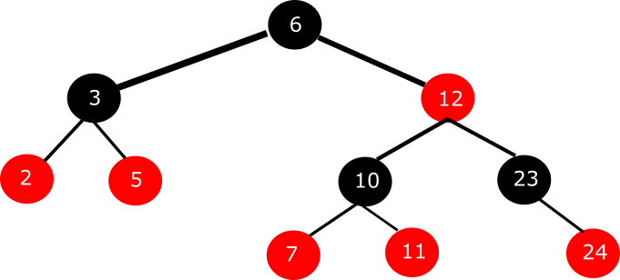

Zadanie 7
Pytanie: Jak będzie wyglądała procedura wyszukania węzła o kluczu 10?

Odpowiedzi:
A) Algorytm na starcie stwierdzi, że nie ma węzła o takiej wartości klucza i zakończy procedurę.
B) Jeśli znajdziemy węzeł o zadanym kluczu, to kończymy procedurę.
C) Jeśli wartość klucza dla obecnego węzła jest mniejsza od szukanej, to idziemy w lewo.
D) Jeśli wartość klucza dla obecnego węzła jest większa od szukanej, to idziemy w lewo.